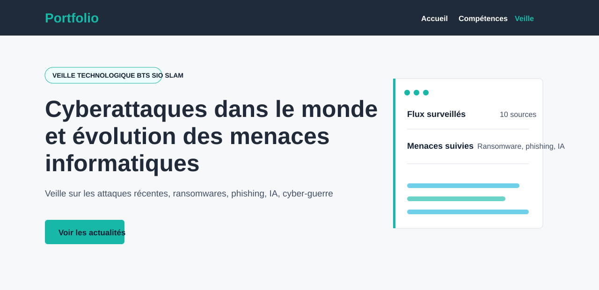
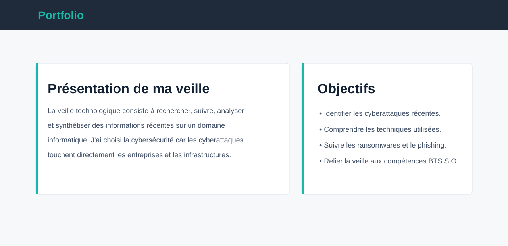
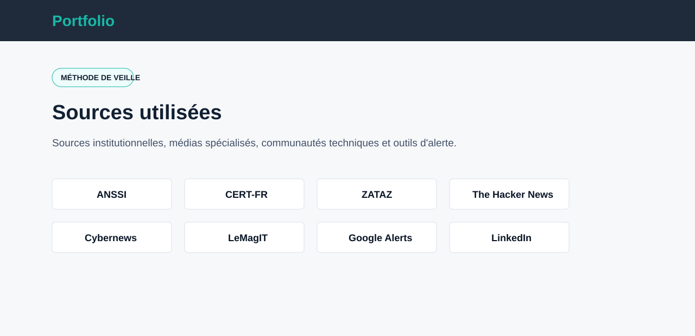
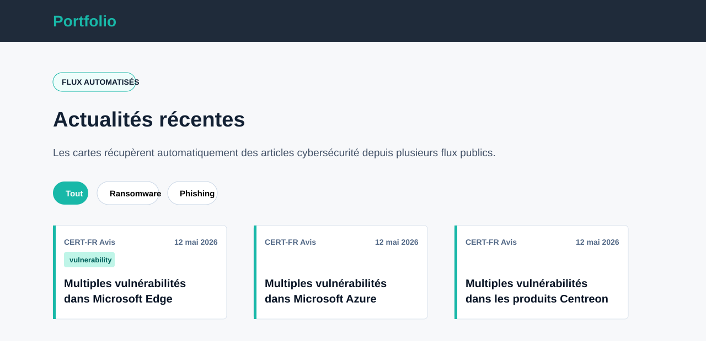
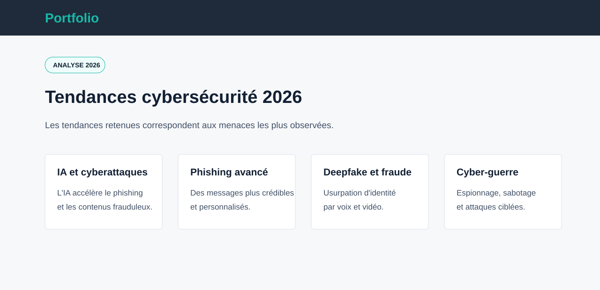
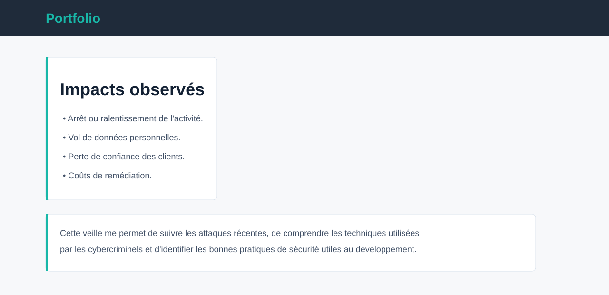

BTS SIO SLAM - Organiser son développement professionnel
Dans le cadre de mon BTS SIO SLAM, j'ai mis en place une veille technologique sur les cyberattaques dans le monde et l'évolution des menaces informatiques. Cette veille me permet de rester informé sur les attaques récentes, les ransomwares, le phishing, les failles critiques, l'utilisation malveillante de l'intelligence artificielle et les risques pour les organisations.
J'ai choisi ce sujet car la cybersécurité est directement liée au développement d'applications : protection des données, authentification, gestion des accès, sauvegardes, correction des vulnérabilités et prise en compte des risques dès la conception d'un service informatique.
Recherche et suivi d'informations à partir de sources fiables et spécialisées.
Analyse des tendances : IA et cyberattaques, phishing avancé, deepfakes, cyber-guerre et attaques contre les infrastructures critiques.
Synthèse des impacts observés : arrêt d'activité, vol de données, perte de confiance et coûts de remédiation.
Utilisation de flux publics, d'alertes et de sources institutionnelles pour suivre l'actualité cybersécurité.

Présentation du sujet de veille

Présentation de la veille et objectifs

Sources utilisées

Flux automatisés d'actualités

Tendances cybersécurité 2026

Impacts observés et bilan personnel
Compétences mobilisées
Veille technologiqueCybersécuritéAnalyse de sourcesSynthèse d'informationsDéveloppement professionnelBTS SIO SLAM